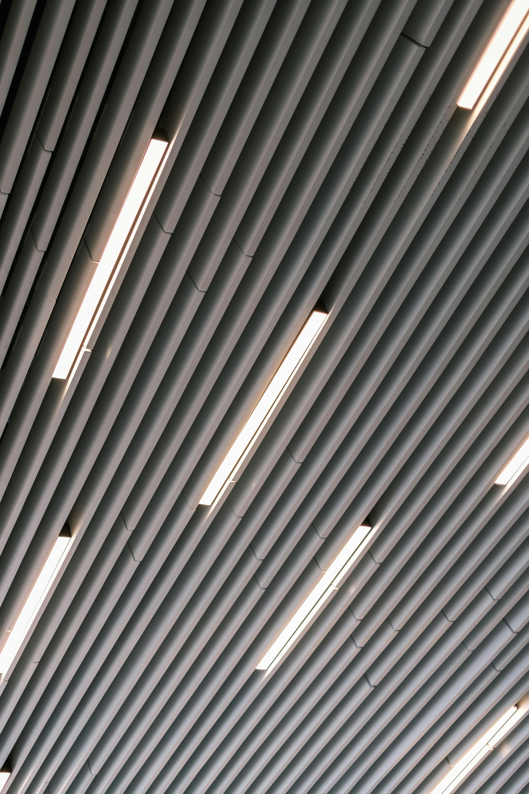
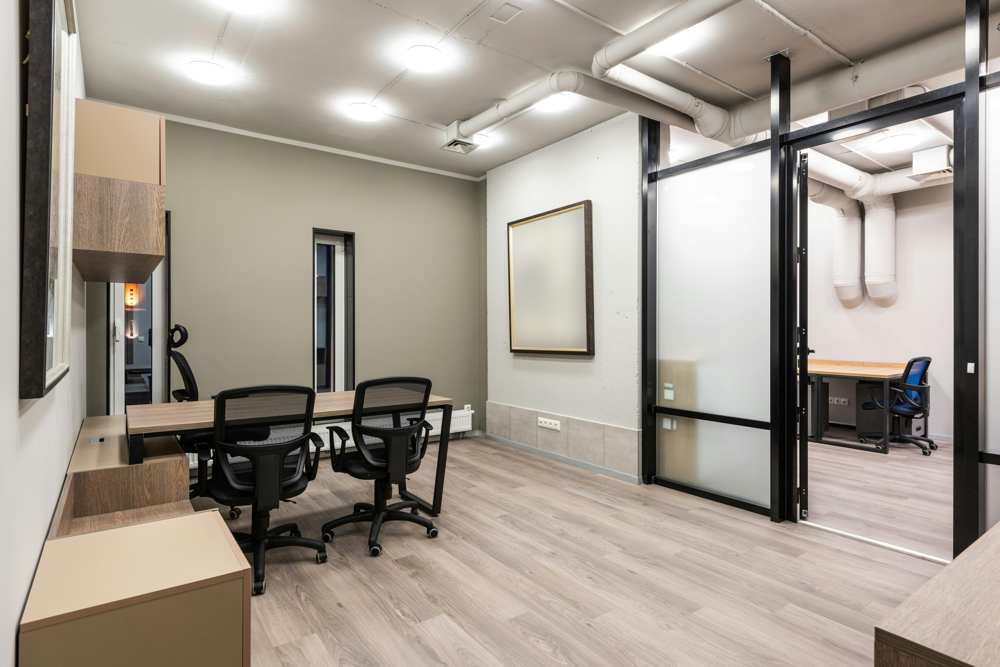

Transforming Interiors with Quality Finishes
JA2K provides renovation and fit out services focused on improving interiors, enhancing functionality, and creating visually appealing spaces for homes and businesses.
Painting Services
Our painting services deliver smooth and professional finishes for both interior and exterior spaces. We focus on quality application and long-lasting results.
- - Interior and exterior painting
- - Modern colour finishes
- -Clean and professional workmanship
False Ceiling
We design and install false ceilings that improve aesthetics, lighting integration, and the overall appearance of interior spaces.
- - Modern ceiling designs
- - Lighting integration support
- - Neat and elegant finishes

Partitioning
Our partitioning services help organize and optimize spaces while maintaining functionality and visual appeal for offices and interiors.
- -Office and interior partition solutions
- - Functional space organization
- - Modern and practical layouts

Interested in this service?
Contact JA2K to discuss your renovation and fit out project.
CONTACT US